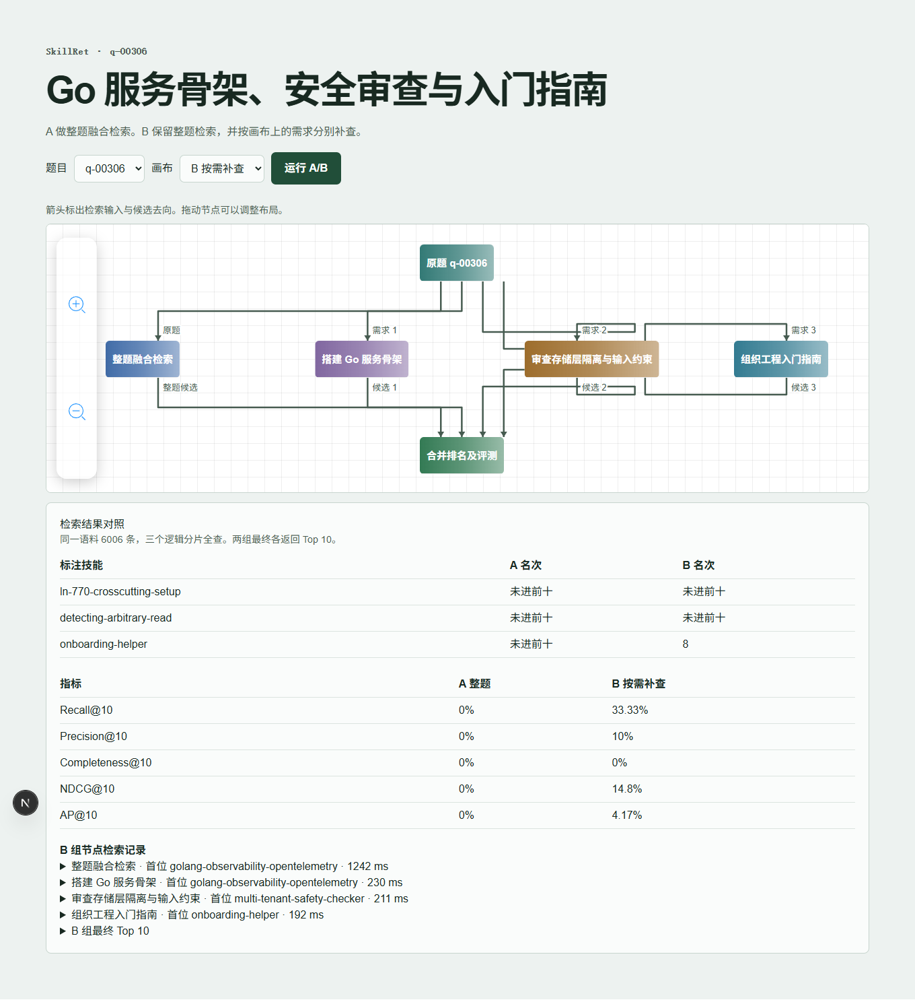

q-00306 Go 服务骨架、安全审查与入门指南
onboarding-helper 从入门指南分支第 1 进入最终第 8。服务基础和数据访问审查的两项标注技能均未进入候选前十。
A/B 指标
| 指标 | A 整题 | B 按需求补查 |
|---|
| Recall@10 | 0.00% | 33.33% |
| Precision@10 | 0.00% | 10.00% |
| Completeness@10 | 0.00% | 0.00% |
| NDCG@10 | 0.00% | 14.80% |
| AP@10 | 0.00% | 4.17% |
数据集标注技能的名次
| 标注技能 | A | B |
|---|
| ln-770-crosscutting-setup | 未进前十 | 未进前十 |
| detecting-arbitrary-read | 未进前十 | 未进前十 |
| onboarding-helper | 未进前十 | 8 |
原题与 B 组各节点
整题融合检索
We're spinning up a new Go microservice called "VaultStream" that aggregates and serves financial transaction logs from multiple upstream data stores. I need help with three things:
1. **Project scaffolding and repo setup**: I need to get the basic project structure in place — Go module init, directory layout (cmd/, internal/, pkg/, etc.), Makefile, Dockerfile, CI config, linting setup, the usual boilerplate. Can you help me set up the cross-cutting concerns too? Things like structured logging (zerolog or zap), graceful shutdown, health check endpoints, config management (env vars + YAML), and middleware for auth/tracing/metrics. Basically the foundational skeleton so the team can start building features on top of a solid base.
2. **Security review of the data aggregation layer**: Since VaultStream pulls from multiple upstream stores (Postgres, Redis, and an S3-compatible object store), I'm worried about path traversal and similar injection issues in how we construct queries and object key lookups. Some of the request parameters (like `account_id`, `date_range`, and `log_prefix`) come directly from API callers and get interpolated into database queries and S3 key paths. Can you audit the planned data access patterns and flag anywhere an attacker could read arbitrary data they shouldn't have access to — like accessing another tenant's transaction logs by manipulating those parameters?
3. **Getting the team onboarded**: We have three engineers joining this project who are experienced backend devs but new to our specific stack (Go with Wire for DI, connect-go for gRPC, and our internal deployment platform). Can you help me put together a getting-started guide that walks them through cloning the repo, understanding the project structure, running it locally, running tests, and deploying to our staging environment? I want it to be practical — not just docs for docs' sake, but something that actually gets them productive in their first day or two.
Happy to share more details on any of these — let me know where you'd like to start.
- golang-observability-opentelemetry
- security-scan-go-vuln
- golang-web
- Go Ecosystem
- connect-go-reference
- go-cli-builder
- golang
- go-coding-standards
- go-service-hexagonal
- blackhat-go
搭建 Go 服务骨架
Scaffold a Go service with module and package layout, Docker, CI, lint, structured logging, graceful shutdown, health checks, environment and YAML config, and middleware for authentication, tracing and metrics.
- golang-observability-opentelemetry
- golang-web
- go-coding-standards
- rest-api-patterns
- go-service-hexagonal
- golang
- Go Ecosystem
- monitoring-observability
- wish-ssh-code-review
- go-grpc
审查存储层隔离与输入约束
Audit Go data access across PostgreSQL, Redis and an S3-compatible store for unsafe caller-provided inputs. Focus on parameterized data access, object key validation and explicit tenant isolation.
- multi-tenant-safety-checker
- multi-tenant
- security-audit
- blackhat-go
- security-lens
- security-assessor
- redis-inspect
- ms365-tenant-manager
- tenant-provisioning
- compliance-checker
组织工程入门指南
Write a practical onboarding guide for developers joining a Go service with Wire and connect-go. Cover repository layout, cloning, local setup, tests and staging deployment.
- onboarding-helper
- connect-go-reference
- golang-web
- recovery-app-onboarding
- gapless-crypto-clickhouse-onboarding
- user-guide-creation
- golang
- env-setup-assistant
- Go Ecosystem
- investigating-git-repo
最终候选
A Top 10
- golang-observability-opentelemetry
- security-scan-go-vuln
- golang-web
- Go Ecosystem
- connect-go-reference
- go-cli-builder
- golang
- go-coding-standards
- go-service-hexagonal
- blackhat-go
B Top 10
- golang-observability-opentelemetry
- security-scan-go-vuln
- golang-web
- go-coding-standards
- rest-api-patterns
- multi-tenant-safety-checker
- multi-tenant
- onboarding-helper
- connect-go-reference
- Go Ecosystem
RSI 实测截图
